Qt && Opencv Config
关于Qt + opencv各平台编译方法的水博客1（代价是搞了N久）
写在前面
正确选择模块的版本是必要的 ——爹的 instruction
首先，如果你是一个构件库者，哥们建议你仔细看看这帮写博客的人他们构建配置的版本是多少！防止坑上加坑，导致人寄上加寄！
下面，我将介绍一下简单的 Windows11/Linux-Ubuntu20.04 Qt5.12.8/Qt6.6.0 + Opencv 4.6.0/Opencv 4.5.3， 如果你是想在自己的电脑上搭建上述系统，烦请按照我下面给出的若干的reference version, 否则在编译，安装，运行，到最后的打包出了问题。。。很正常就会，以及，以及
注意到本博客尚未解决：基于Windows11下如此操作方法qt6.6.0 + mingw_64bits打包程序的可移植性的问题，具体表现为于纯净Win10下爆出 RunTimeError - Unknown Terminate 以及Windows11下程序双击无反应的问题
成功解决的是下面的，全流程简单的概括为👇
Windows11 + Qt 5.12.8 + Opencv4.5.3
首先，我们需要的是获取上面我提到的资源。
如果打算配置的是6.6.0，Cmake可以不用下，qt有自己自带的Cmake-gui，但是低版本的不自带Cmake-gui，需要自己来下载。
Qt 5.12.8可以通过点击这里获取：qt-opensource-windows-x86-5.12.8.exe
或者，你想要浏览其他的版本，看这里：Index of /new_archive/qt
至于 opencv，这里给出传送门：
opencv:Releases - OpenCV，对了，有人有疑问：我是该安装Source版本的还是Windows版本的呢？都一样，前者直接得到压缩包，后者是一个解压程序。基本一致的！结合自身的需求来！
opencv_contrib : 这个用户贡献的contribution的子模块，是需要到 github那里去下载的！注意到这里给出的是 opencv_contrib 4.x 的教程。读者可以自行尝试opencv_contrib 5.x的联合编译。https://github.com/opencv/opencv_contrib/tree/4.x（不过，不建议编译这个，我自己尝试过在后续的编译中这个会爆炸（爆一大堆错误））
我们下载好了之后。得到的是若干的压缩包和一个QT安装的SDK。
安装QT
原则上讲，这个版本的QT不使用线上安装，意味之我们不需要配置Qt tempory repository.注意到如果你先前有一个qt账号，登陆即可，反之，注册一个！直接选择对应的编译包和SDK包就可以了。为了联合演示 mingw_32, mingw_64, MSVC2017_32,MSVC_64编译器下的编译行为，这里我就都下载了，以及，在Tools选择上也都选择了MSVC编译器和mingw编译器（tnnd,13.8G）。Qt作为桌面开发的经典工具，安装也是press几个按钮的事情。这里就不细说说明了。
安装opencv
解压就完事了！
开始联合编译Qt + opencv
我们将opencv得到的资源，分别置于一个空间比较大的地方。比如说我的D盘（）。
专门建立一个文件夹，叫：
Qt5_12_Opencv453Compile 在底下，再建立三个文件夹！

如上图所示。也就是：
opencv_build
opencv_contrib
opencv_source 我想，你从名字就知道了——opencv_source装源码，把Opencv4.5.3的源码内容放到这里, opencv_contrib 装用户贡献模块，把contrib的所有内容放到这里，而opencv_build,任何一个熟知Cmake编译的人都知道装编译的结果的。
现在，打开你的Cmake-gui
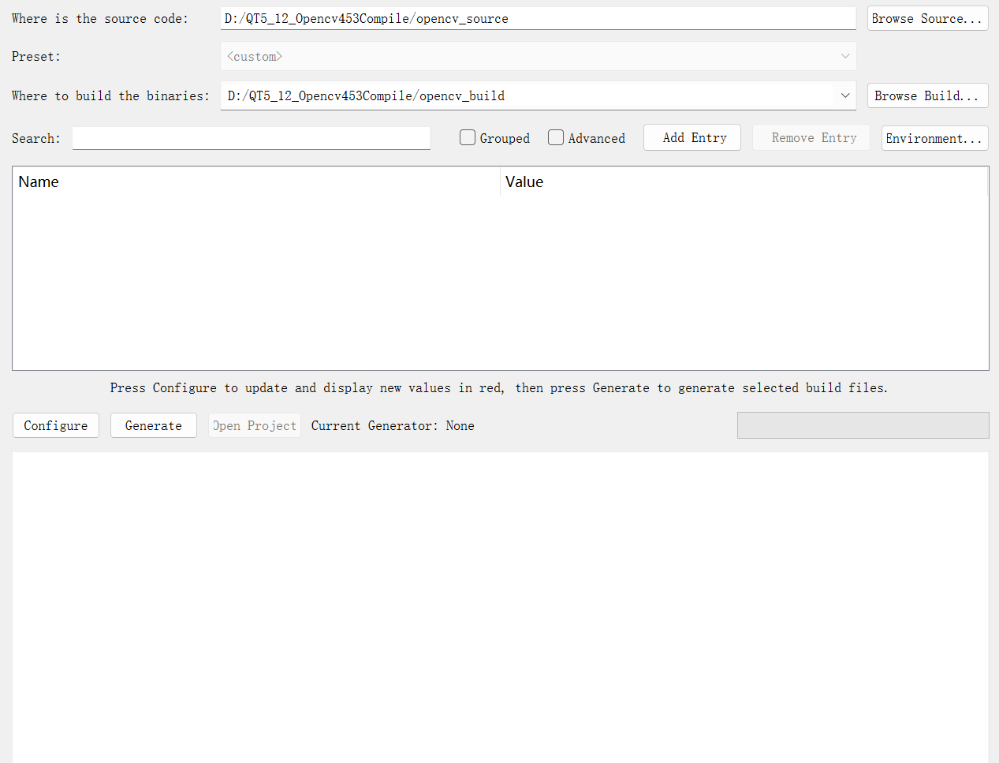
你的Where is the source code和where to build the binaries，如果先前没有用过会是空的！source code自然在opencv_source下，build产生的文件放到opencv_build下，就像这样一样。
点击Advanced 和 Grouped,防止自己老花眼找半天的Cmake变量。点击Configure
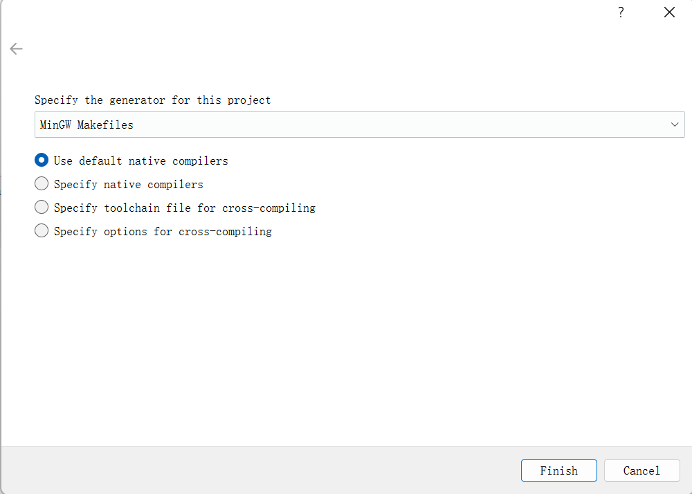
默认下，这里是没有编译器的，现在，选择Specify native Compliers（指定本地编译器），点击之
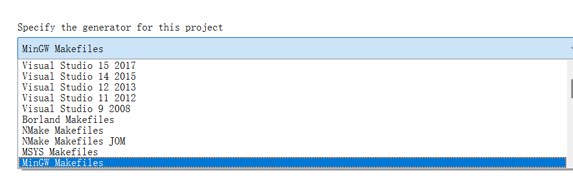
下拉找到Mingw Makefiles，这就是我们想要的编译器了！
Config结束后，点击Next.
指定好自己C,C++语言的编译器位置，他们在自己QT安装的文件下的。
D:\QT\Qt5.12.8\Tools\mingw730_64\bin\gcc.exe // for CD:\QT\Qt5.12.8\Tools\mingw730_64\bin\g++.exe // for C++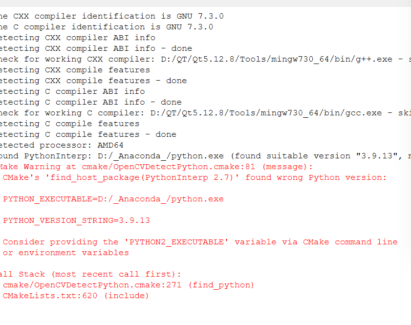
可以看到正在配置了。
同时，记得添加编译器到环境变量！
D:\QT\Qt5.12.8\5.12.8\mingw73_64\bin;
D:\QT\Qt5.12.12\Tools\mingw730_64;
D:\QT\Qt5.12.8\Tools\mingw730_64\x86_64-w64-mingw32\bin 他们稍后是为了使系统可以找到Qt库来运行Qt的！
待到你添加完毕之后，现在，回到Cmake界面是满山红
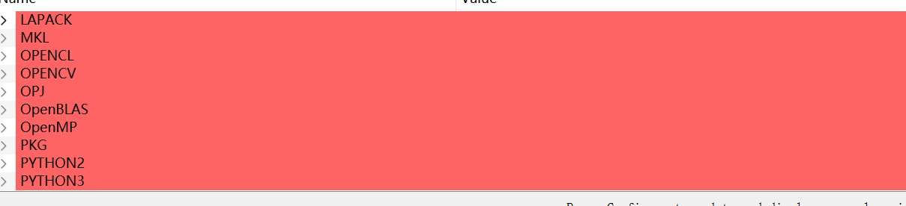
下面开始配置选项
1. 打开with_OpenGL 和 With_Qt,他们在WITH group下面
2. 配置好contrib模块，就是在Opencv Group下，找到这样的一个变量 OPENCV_EXTRA_MODOLES_PATH
给他写上：
D:\QT5_12_Opencv453Compile\opencv_contrib\modules 呐！就是我们存放contrib模块下面的modules模块，注意。
再次重新配置：点击Configure
正常来讲，再次编译过后，是不会有红色出现的！但是我这里还是红色出现了！
是Qt5的库路径不知道。给我默认到自己的Anaconda的库里去了。自己手动修改一下，同时，留意一下正斜杠与反斜杠的区别（fuck Windows）
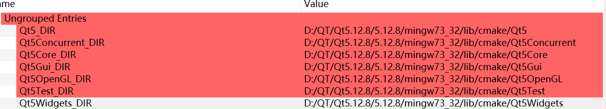
_这里是为了测试mingw32编译才选择的32编译器_（WRANING!后续的编译中尝试过了！不建议选择这个，64位的系统就选择mingw64!）如果你不想打包库的话，可以选择64位编译器。
以及我看到有教程建议在Opencv的变量中只勾选opencv_world. 这是把若干的库编译成一个，显得笨重！这里就不这样做了！
点击Config
(留心一下产生的清单里有没有都配置成为你想要的环境，确定了再点击！)
再点击Generate生成可以用的MakeFile.
PowerShell启用mingw32编译源代码
mingw32-make -j 8 // 8 is then_recommend 后来还是调成8了，因为有一定概率产生多线程编译错误导致编译中止！
CD到自己的Build文件下，敲这个指令！（哈哈，其实是让他所有的CPU资源来调动编译之，可不想等1个小时）
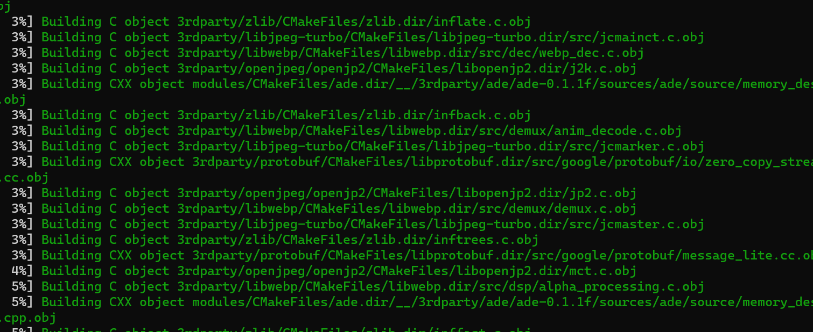
一敲击回车，程序开始快速的编译。泡杯咖啡休息一下把。
中间可能存在跑错！注意！明确选择的编译器是64位！同时，注意反复确认引入的Cmake选项指向的环境是你想要的那个（错一点都不行！）
_不！要！mingw编译器 停止编译了还要继续继续在原文件夹下再输mingw32-make_了，否则可能会跳过一些库的生成！导致后面程序应用后异常崩溃！
mingw32-make install 下载好刚刚那些库！
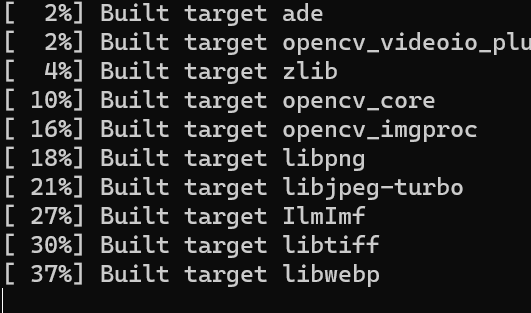
现在，我们下载好的库，就在
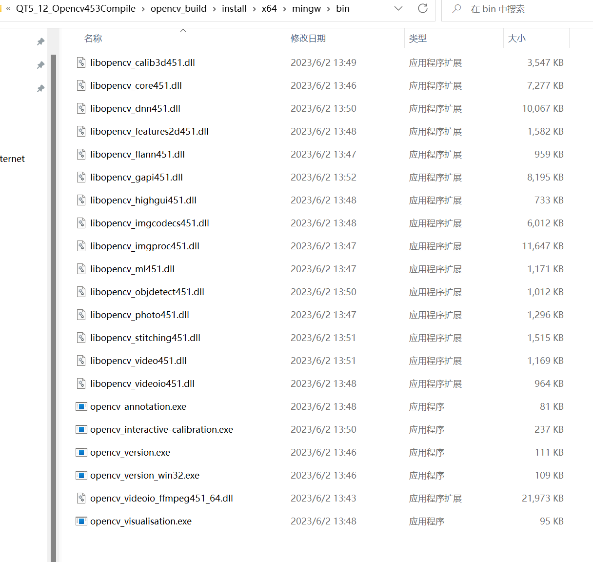
以及opencv可用的文件在：
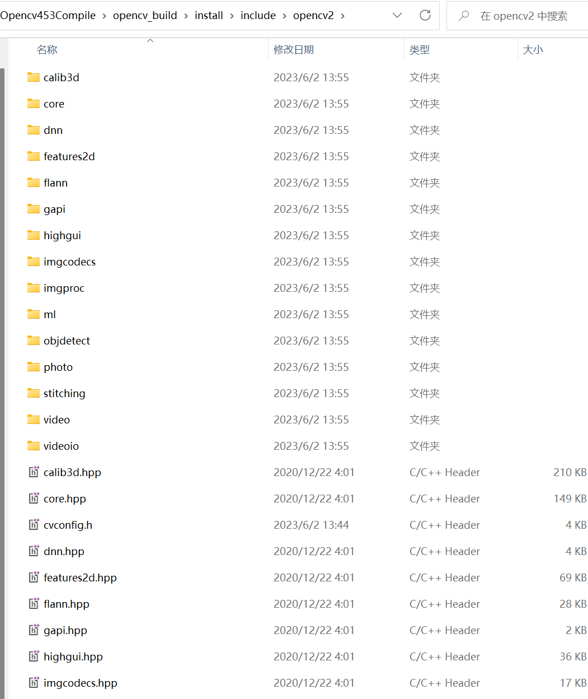
打开QT，整一个MainWindow工程。
现在开始检验你配置的是否成功了！（大喜）
在PRO工程文件下，添加
INCLUDEPATH += D:\QT5_12_Opencv453Compile\opencv_build\install\include
LIBS += D:\QT5_12_Opencv453Compile\opencv_build\install\x64\mingw\bin\libopencv_*.dll 然！后！Ctrl+S重载一下工程，否则下面别让自己白忙活！
尝试一下，在MainWindow.cpp下整点：
#include "mainwindow.h"
#include "ui_mainwindow.h"
#include<opencv2/opencv.hpp> // 关键时刻！
#include<QDebug>
using namespace cv;
MainWindow::MainWindow(QWidget *parent)
: QMainWindow(parent)
, ui(new Ui::MainWindow)
{
ui->setupUi(this);
Mat img = imread("D:\\QT projects\\5128opencv\\1.png");//嘿！这个别照搬地址！哥们找自己的一张图片扔进来它的地址！
if(img.empty()){
qDebug() << "Error in loading picture";
}
namedWindow("Display window", WINDOW_AUTOSIZE );
imshow("Display window",img);
}
MainWindow::~MainWindow()
{
delete ui;
} 好了，如果，我说如果，没有什么问题，那恭喜可以开摆了。。。
但是如果没有呢？
0. Can not find opencv2/opencv.hpp: 好好看看你有没有Ctrl + S你的工程
1.Unrecognize File Format
当你运行上面的代码在QConsole上扔出了这个错误的时候，注意选好你的编译器套餐！留意到你用了什么编译器编译的opencv+QT，就使用哪款编译器！
2. 程序异常结束
哥们太倒霉了！程序不认识库！也就是说，他没办法按照你给的路径去寻找库，一个一点都不优雅的方法，就是把 自己编译产生的库，在install/x64/bin下的库，原封不动的扔到自己的debug或者是release文件夹下，让G++/GCC编译的时候直接在本地工作文件夹下找到库从而避免一场结束！（Windows的这个屏蔽了过多的细节，没办法）
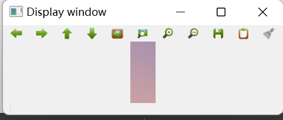
这是成功的界面！
程序打包
成功了！后面经过调试，成功将这一个环境的qt+ opencv程序应用到了各台电脑上！（不用下载几百MB的库力，喜）
首先，转到自己同名目录下的：
很抽象的一个：》
D:\QT projects\build-5128opencv-Desktop_Qt_5_12_8_MinGW_64_bit-Release 将这个目录下的可执行文件拿出来，和这下面的一大堆库一起
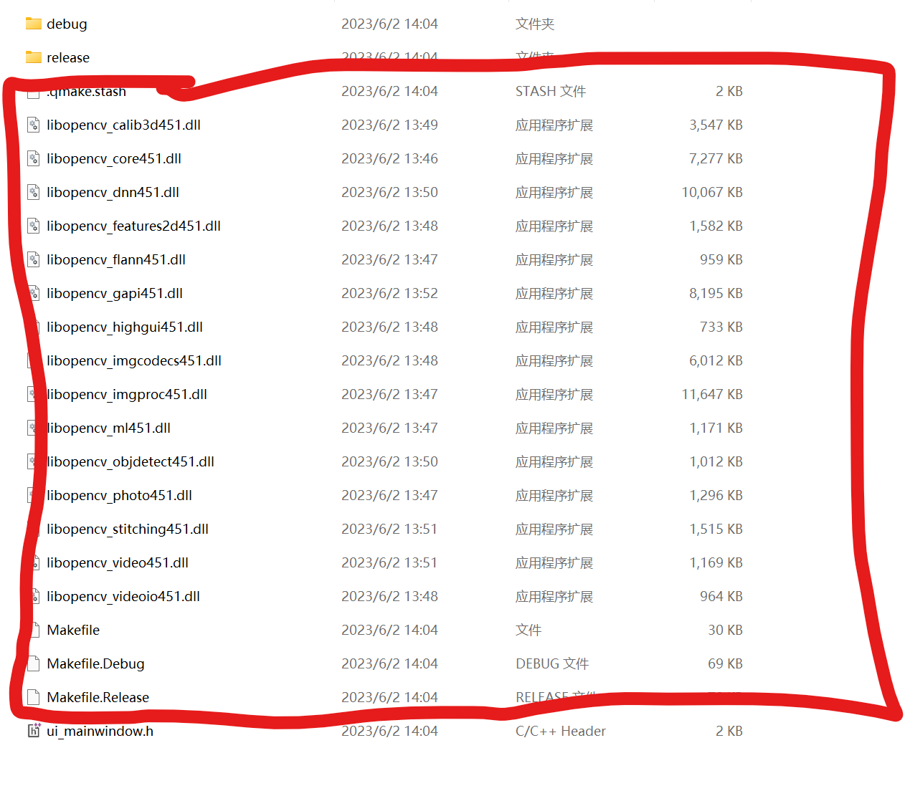
和
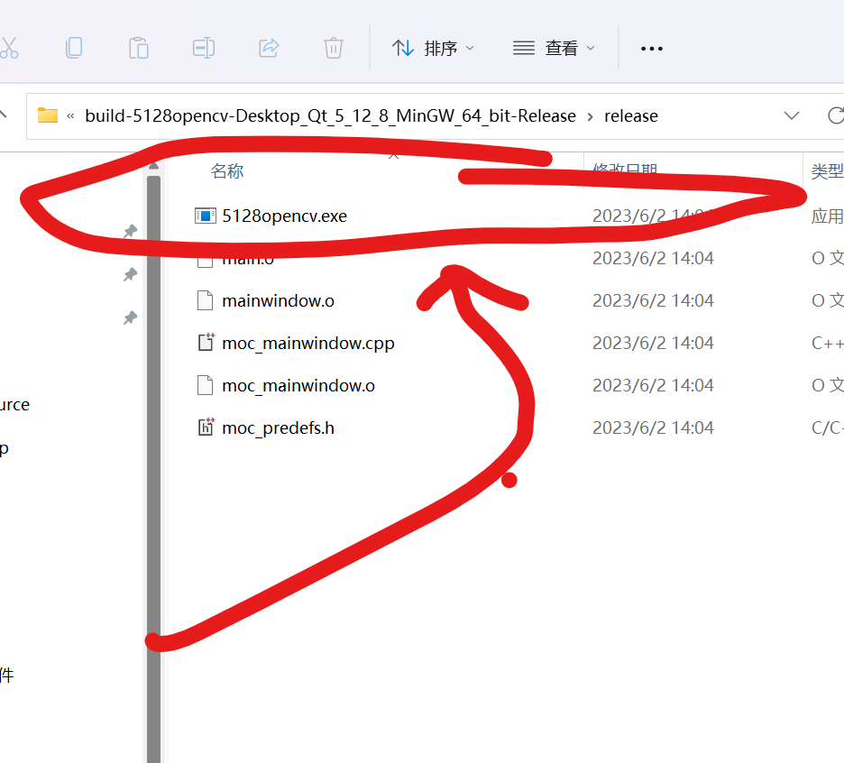
把他们拎出来：
扔到一个建议是全程不带一点中文名的路径（for example:你的D盘），把我说的那一大坨东西，扔到一个新建的文件夹下。
现在，在应用搜索处，搜索你构建的编译器，比如说根据这个名字：
build-5128opencv-Desktop_Qt_5_12_8_MinGW_64_bit-Release 我应当选择
Qt5.12.8 Mingw64bits 然后选择之运行：
cd 到自己的构建文件夹下
windeployqt yourFileName.exe 然后就会给你配置一些库了！
点击一下
Error 1： 少库了！
总而言之就是少库了！别慌别慌，补一下就好啦！
D:\QT\Qt5.12.8\5.12.8\mingw73_64\bin 找到自己安装QT下的这种文件夹，找到缺什么库就直接Copy即可。
Error 2: Terminate by unknown Error
反正就是扔给你这个未知的错误，本质上来讲就是少库（对可执行文件而言），可能是没有在全英文路径下打包造成。
Error 3：EXE文件在装死
嘛，说白了还是少库，有人急了（是我/(ㄒoㄒ)/~~）咋还少库啊，事实上是：库签名对不上，使用的mingw编译器下的windeployqt没有给你正确的打包！可能还是：没有在全英文路径下打包造成。实在不行库全删了，缺啥补啥！
Anyway，忙活了两天的(大致回忆了一下是块30多个小时处理之)配置这里说完了，下一篇博客我介绍一下Linux + qt5.12.8 + opencv 4.5.3的配置。